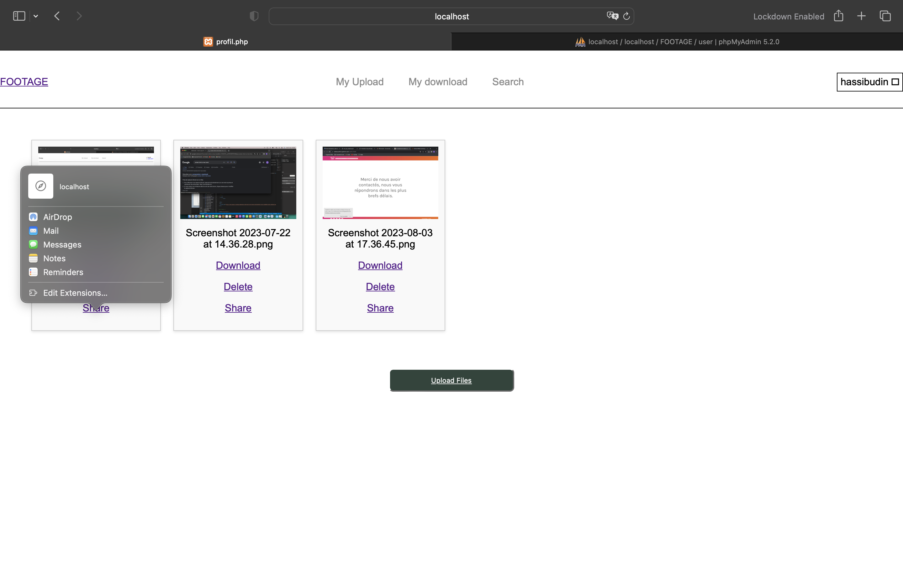
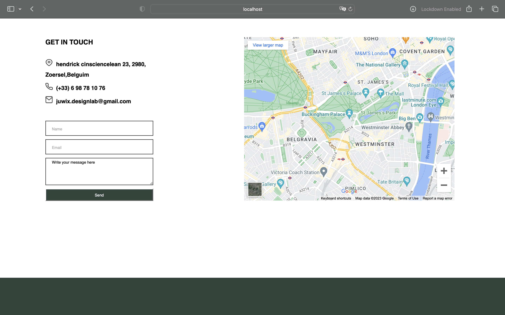
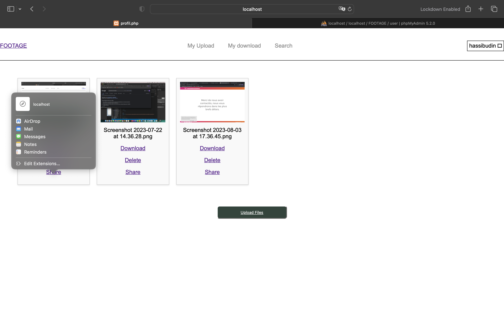
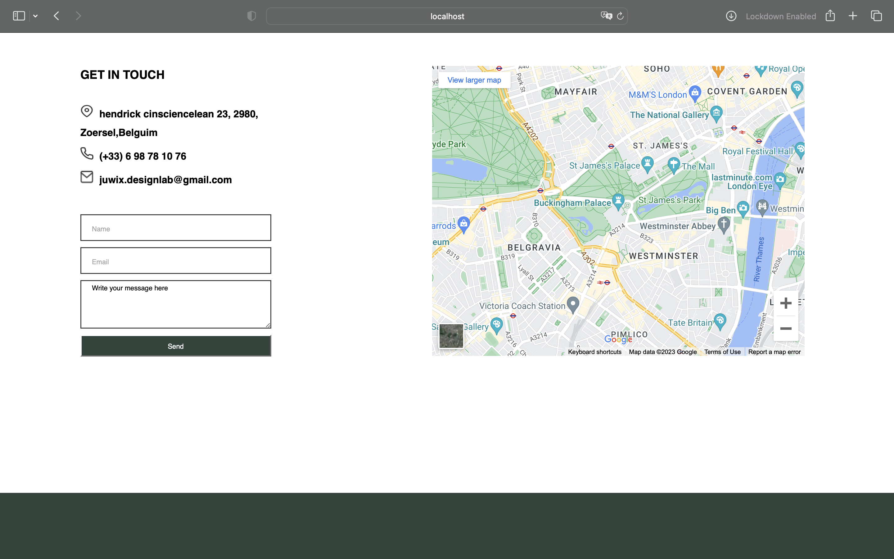
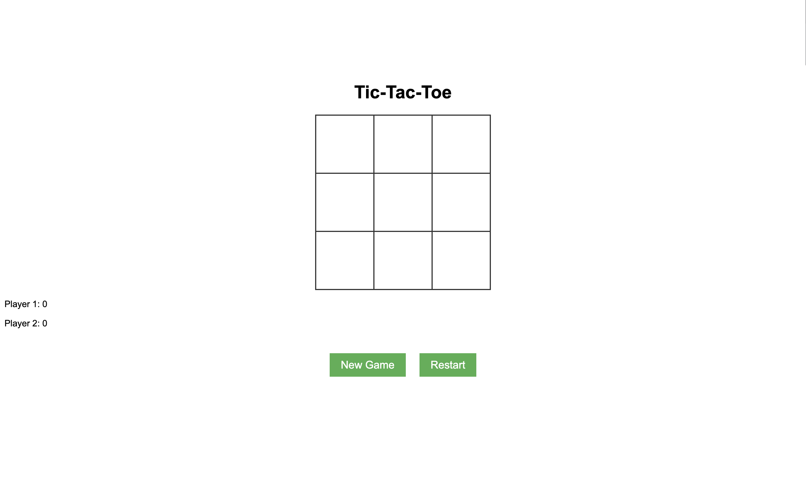
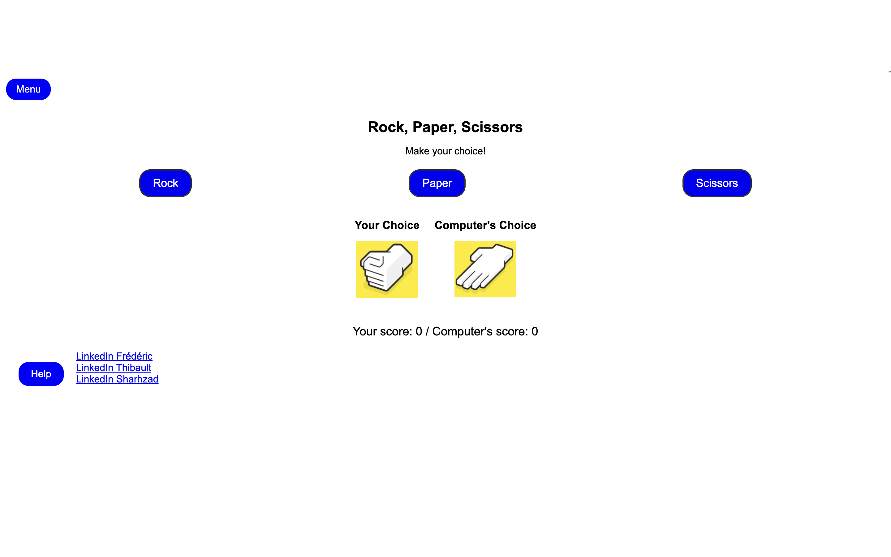
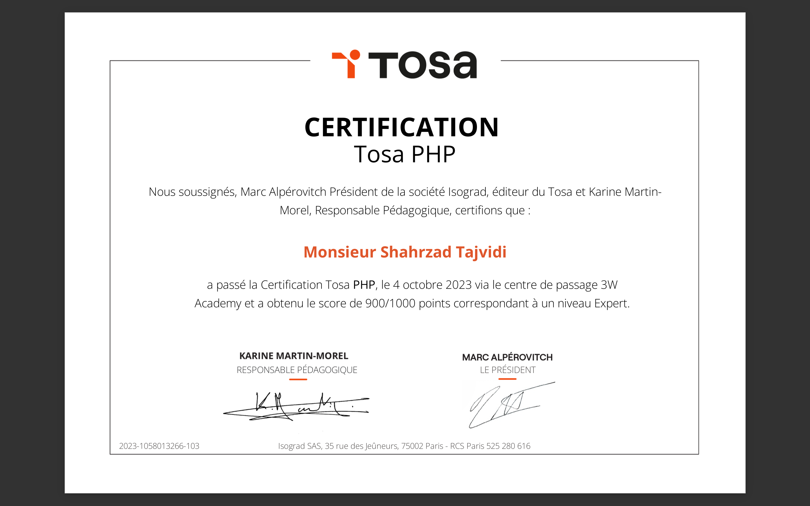
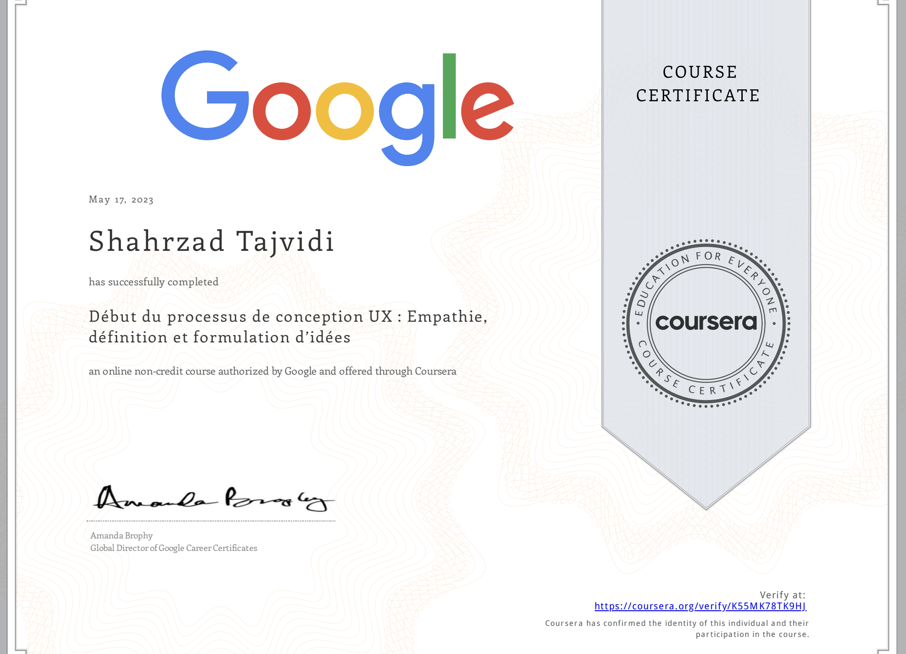

Mon Profil :
- Nom : Shahrzad Tajvidi
- Date de naissance : 14/03/1995
- Expérience professionnelle : 2 ans
- Niveau d'études: Bac +3 de mathématiques
- Discription : Je suis un développeur web intéressé par la création de sites. J'ai pu développer des connaissances dans les langages de programmation, ces compétences et appétences m'ont permis de créer les sites. J'ai acquis une solide expérience dans plusieurs langages de programmation et frameworks, tels que Java, HTML, CSS, JavaScript, PHP, Angular et Symfony. Mon objectif est de fournir des solutions technologiques de qualité, en mettant l'accent sur l'efficacité et l'expérience utilisateur.
Expérience professionnelle :
développement Web et informatiques :
-
Développeur Web chez IBIM Company - 2018 à 2020
- Responsable de la conception et du développement de sites Web pour les clients de l'entreprise.
- Collaboration avec une équipe multidisciplinaire pour créer des solutions personnalisées répondant aux besoins spécifiques des clients.
- Optimisation des performances des sites pour une meilleure expérience utilisateur.
-
DESIGNER LES JOUETS chez l'école à Téhéran - 2016-2020
- Designer les jouets d'enfants pour bien apprendre les mathématiques
- Créé les jouets avec JAVA, JavaScript, C#
-
ASSISTANTE DE PUBLICITÉ chez Greta-Perpignan - 2021
- Supports de communication (graphismes et design) et la préparation d'un forum
- Travaillé avec logiciels de graphisme: photoshop et conva
- Travaillé sur UX Design sur leur site
-
DIRECTRICE ARTISTIQUE chez Sedaye Honar à Téhéran - 2015-2020
- Directrice Artistique de musique traditionnelle et locale
- Chef du Projet
- Gestion de projet et analyse des besoins du client
-
TRADUCTRICE D'ANGLAIS chez LES bureaux officiels - 2013-2021
- Employée administrative et de traductrice-assistante
- Comptables
- Gestion du temps
Autres Expériences:
Projets récents :
FOOTAGE
Description du projet : FOOTAGE est un site conçu pour aider les photographes et les utilisateurs à organiser et stocker leurs photos et vidéos. Les photographes peuvent télécharger, classer, visualiser et supprimer leurs fichiers. De plus, une fonction de recherche permet de retrouver facilement des fichiers par leur nom.
Technologies utilisées : HTML, CSS, JavaScript, PHP, MYSQL
Mon rôle et les challenges dans ce projet : En charge du développement du backend et de la base de données. J'ai dû mettre en œuvre des mesures de sécurité robustes, car le site implique la gestion de données personnelles des utilisateurs.
 



Pour voir plus d'images, cliquez sur le lien.
SHAHR_APPLE
https://shop.shahre-apple.com/
Description du projet : SHAHR_APPLE est une plateforme e-commerce dédiée à la vente de produits Apple, de smartphones et d'accessoires connexes. Elle offre aux clients une expérience de shopping sécurisée et pratique, avec un large choix de produits technologiques de haute qualité.
Technologies utilisées : Wordpress, PHP
Mon rôle et les challenges dans ce projet : Responsable du développement backend et de la base de données, ainsi que de la rédaction du cahier des charges. Travailler avec un vrai client m'a permis d'acquérir des compétences dans la rédaction de cahiers des charges et de travailler avec Wordpress.
Pour voir plus d'images, cliquez sur le lien.
Khane Roshd
Description du projet : Khane Roshd présente des informations sur un centre médical et propose un formulaire de contact pour les utilisateurs.
Technologies utilisées : Wordpress et PHP
Mon rôle et les challenges dans ce projet : Responsable du développement backend et de la base de données, ainsi que de la rédaction du cahier des charges. Cette expérience m'a permis de travailler avec un vrai client et d'apprendre à rédiger des cahiers des charges tout en travaillant avec Wordpress.

Pour voir plus d'images, cliquez sur le lien.
Khane_loknat
Description du projet : Khane_loknat présente des informations sur un centre médical et propose un formulaire de contact pour les utilisateurs.
Technologies utilisées : Wordpress et PHP
Mon rôle et les challenges dans ce projet : Responsable du développement backend et de la base de données, ainsi que de la rédaction du cahier des charges. Cette expérience m'a permis de travailler avec un vrai client et d'apprendre à rédiger des cahiers des charges tout en travaillant avec Wordpress.
Pour voir plus d'images, cliquez sur le lien.
Vetu
Description du projet : Vetu est un site e-commerce de vente de vêtements, offrant une expérience de shopping en ligne pratique, sécurisée et agréable. Les clients peuvent facilement trouver des vêtements élégants et tendances tout en bénéficiant d'un excellent service client.
Technologies utilisées : HTML, CSS, JavaScript, PHP, Mysql
Mon rôle et challenges dans ce projet : J'ai développé la page de connexion, le panier, et le profil utilisateur (partie backend et frontend). Travailler en groupe sur GitLab m'a permis d'améliorer mes compétences en travail d'équipe et de progresser dans le développement frontend.
Pour voir plus d'images, cliquez sur la lien.
Mini Projets :
TIC- TAC- TOE
Le jeu du Tic-Tac-Toe, également connu sous le nom de "Morpion," est une réalisation de jeu classique que j'ai développée en utilisant HTML, CSS et JavaScript. Ce jeu intemporel se joue sur une grille de 3x3, où deux joueurs s'affrontent pour aligner trois de leurs symboles en ligne, que ce soit horizontalement, verticalement ou en diagonale. Mon implémentation du Tic-Tac-Toe propose une interface conviviale et interactive, permettant aux joueurs de prendre des décisions tactiques et de s'amuser en jouant. Ce projet démontre mes compétences en développement web et en création de jeux simples et amusants.
Technologies utilisées : HTML, CSS, JavaScript
Ciseaux, Pierre, Papier
Le jeu "Papier-Ciseaux-Pierre" est une réalisation de jeu classique que j'ai créée en utilisant HTML, CSS et JavaScript. Il offre une expérience amusante où deux joueurs peuvent s'affronter pour voir qui peut faire le meilleur choix entre "Pierre," "Papier" et "Ciseaux." Chacun de ces éléments bat un autre élément selon des règles simples, ce qui rend le jeu excitant et rapide. Mon implémentation propose une interface intuitive qui permet aux joueurs de faire leur choix, puis détermine le gagnant en fonction des règles du jeu. Ce projet démontre mon talent pour créer des jeux amusants et interactifs, ainsi que ma maîtrise des technologies web pour le développement de jeux simples mais divertissants.
Technologies utilisées : HTML, CSS, JavaScript
Compétences techniques :
- JAVA
- JavaScript
- PHP
- WordPress
- Angular
- Symfony
- Node.js
- React
Formation :
-
3W Academy Toulouse-France
2023 | Formation Full Stack Developer Spécialisation React et Symfony”
-
M2I Perpignan-France
2023 | Certificat de formation de POEC - Développeur PHP
-
GRETA-CFA Montpellier-France
2022 | Certificat de formation de programmation de JAVA
-
Université SHAHID BEHESHTI Téheran-Iran
2013-2018 | Licence en Mathématiques et Applications
Autres Certificates Obtainu:
-
PHP- Niveau Expert
Download
-
UX-UI DESIGN
Download
{kind=link}
{kind=link}
Contact :
Téléphone : 07 52 72 41 49
Adresse : 115 route de Labège, 31400, Toulouse
Email : shahrzad.tajvidi@gmail.com
Vous pouvez également me contacter avec le formulaire ci-dessous :